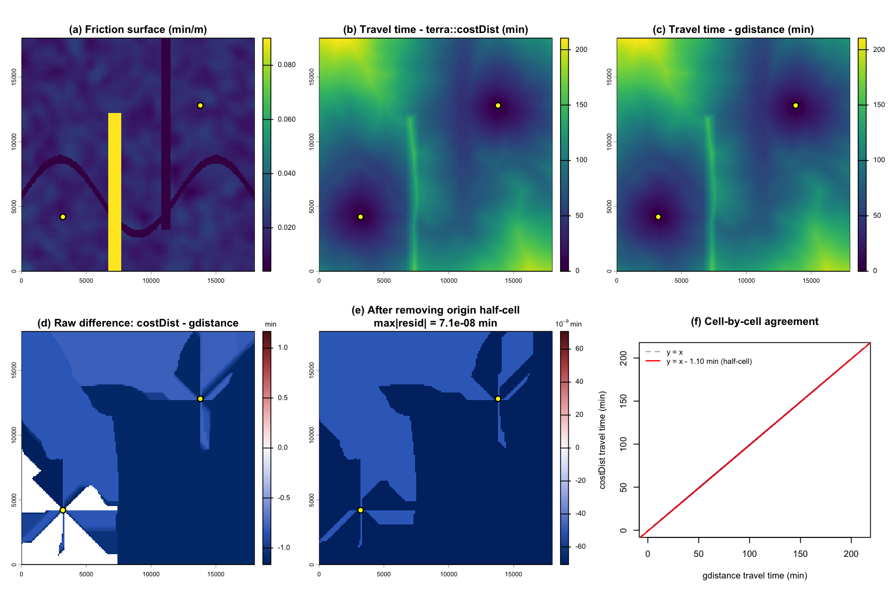
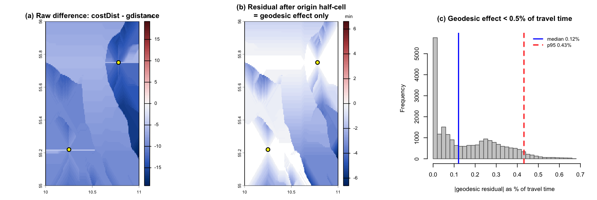

Validating the costDist migration
Source:vignettes/articles/costdist-validation.Rmd
costdist-validation.Rmdcalculate_travel_time() used to convert the
terra friction surface to a raster object so
it could run the gdistance cost-distance pipeline. That
pulled in two dependencies — raster (superseded by
terra) and gdistance — purely as machinery.
The function has since been reimplemented on
terra::costDist() and those dependencies dropped.
This article is the evidence that the switch was safe: that
terra::costDist() reproduces the same calculation. Both
approaches use the same cost model — eight-direction
movement between cell centres, with each step costing
distance * mean(friction) of the two cells. The claim to
defend is that the two differ only by:
-
the geodesic distance used (
terracomputes true geodesic inter-cell distances;gdistance::geoCorrection()used an approximation), and -
a half-cell convention at the origins
(
gdistancecharges half of the origin cell’s own friction on the first step;costDist()measures cost to the border of the origin cell and omits it),
and by nothing else. Written as a decomposition:
The last term is the one worth proving. The two experiments below drive it to zero.
The original pipeline, kept here only for comparison:
# gdistance builds a graph with edge cost distance * mean(friction) and
# accumulates least-cost paths -- exactly the model terra::costDist() uses.
tt_gdistance <- function(fs, points) {
fr <- raster::raster(fs)
tgc <- gdistance::geoCorrection(
gdistance::transition(fr, function(x) 1 / mean(x), 8)
)
tt <- gdistance::accCost(tgc, as.matrix(points[, 1:2]))
names(tt) <- "travel_time"
out <- terra::rast(tt)
terra::crs(out) <- terra::crs(fs) # align CRS string for raster arithmetic
out
}The trick that isolates the two effects: re-run
gdistance with the origin cells’ friction set to ~0. That
removes the half-cell term, so any remaining difference against
costDist() is the geodesic term alone.
1. In a projected CRS the two maps are identical to machine precision
A projected coordinate system makes the geodesic term exactly zero by construction — all inter-cell distances are planar and both methods use the same ones. So the only thing that can differ is the origin convention. Once we remove that, every cell must agree.
utm <- "+proj=utm +zone=32 +datum=WGS84"
frP <- make_friction(180, 180, 0, 18000, 0, 18000, utm, seed = 3)
ptsP <- data.frame(x = c(3200, 13800), y = c(4200, 12800))
new <- calculate_travel_time(frP, ptsP) # terra::costDist
old <- tt_gdistance(frP, ptsP) # gdistance
# neutralise the origin cells' friction to remove the half-cell term
cn <- terra::cellFromXY(frP, as.matrix(ptsP[, 1:2]))
fs0 <- frP; fs0[cn] <- 1e-9
old0 <- tt_gdistance(fs0, ptsP) # gdistance, no half-cell
x <- terra::values(new)[, 1]
y <- terra::values(old)[, 1]
y0 <- terra::values(old0)[, 1]
ok <- is.finite(x) & is.finite(y) & is.finite(y0)
d_raw <- new - old # raw difference
d_resid <- new - old0 # residual after removing the origin half-cell
offset <- median((y - x)[ok]) # the half-cell offset
resid_max <- max(abs(terra::values(d_resid)), na.rm = TRUE)
Projected CRS. (a) friction surface with two low-friction corridors and a high-friction barrier; origins in yellow. (b, c) travel time from costDist and gdistance – visually identical. (d) raw difference: a near-constant offset localised to the origins. (e) after removing the origin half-cell, the residual is flat at the 1e-9 min level across the whole map. (f) every cell lies on a single line offset from y = x by exactly the half-cell.
The travel-time maps (b, c) are indistinguishable: the same barrier
shadow, the same corridor short-cuts. The raw difference (d) is a
near-constant offset of about 1.1 min, with structure
only in the immediate neighbourhood of the origins — that is the
half-cell. Remove it and the residual (e) is flat at the 7e-08 min level
across all 32,400 cells; the faint texture there is floating-point
noise, not signal. Panel (f) says the same thing: every cell sits on one
line parallel to y = x, offset by exactly the
half-cell.
In a projected CRS, then, the two calculations are the same to machine precision once the origin convention is accounted for — the cost model, the neighbourhood, and the accumulation all carry over exactly.
2. At high latitude, the only remainder is a small geodesic field
Now repeat on a longitude/latitude surface at 55°N, where meridians converge and the geodesic term is live. After removing the same origin half-cell, whatever is left is the pure geodesic effect.
frG <- make_friction(150, 150, 10, 11, 55, 56, "EPSG:4326", seed = 7,
lo = 0.015, hi = 0.04)
ptsG <- data.frame(x = c(10.25, 10.78), y = c(55.22, 55.75))
newG <- calculate_travel_time(frG, ptsG)
oldG <- tt_gdistance(frG, ptsG)
cnG <- terra::cellFromXY(frG, as.matrix(ptsG[, 1:2]))
fs0G <- frG; fs0G[cnG] <- 1e-9
old0G <- tt_gdistance(fs0G, ptsG)
xg <- terra::values(newG)[, 1]
yg <- terra::values(oldG)[, 1]
y0g <- terra::values(old0G)[, 1]
okg <- is.finite(xg) & is.finite(yg) & is.finite(y0g)
d_raw_G <- newG - oldG
d_resid_G <- newG - old0G # geodesic effect only
rg <- terra::values(d_resid_G)[, 1]
# relative size, on well-resolved cells only (at the origins travel time -> 0,
# so a per-cell ratio there is a meaningless 0/0)
tt_thr <- 0.05 * max(yg[okg])
sel <- okg & yg > tt_thr
relf <- 100 * abs(rg[sel]) / yg[sel]
med_rel <- median(relf)
p95_rel <- quantile(relf, 0.95)
resid_max_G <- max(abs(rg), na.rm = TRUE)
Lon/lat at 55N. (a) raw difference. (b) residual after removing the origin half-cell – a smooth geodesic field with no local structure. (c) that residual as a percentage of travel time on well-resolved cells: under half a percent.
The residual (b) is not noise and not local: it is a smooth,
large-scale field, exactly the signature of a distance-model
difference rather than a bug. As a fraction of travel time (c) it is
tiny — median 0.12%, 95th percentile 0.43%, peaking at 6.6 min over
travel times of hundreds of minutes. And here terra is the
more accurate of the two: it uses true geodesic
inter-cell distances, where gdistance::geoCorrection() only
approximated them.
Conclusion
Barring the geodesic distance model and the half-cell origin
convention, the two methods are the same calculation — and in the
projected case, where the geodesic term vanishes, that sameness is exact
to floating-point precision at every cell. That is what justified
dropping raster and gdistance: the cost model,
the neighbourhood, and the accumulation all carry over to
terra::costDist() unchanged, with the geographic correction
now performed internally and more accurately.
The same comparison is run numerically (including on the real
Singapore walk2020 surface) in
data-raw/compare_costdist_vs_gdistance.R,
data-raw/singapore_compare.R, and
data-raw/compare_costdist_plots.R, with results summarised
in data-raw/costdist_migration_comparison.md.